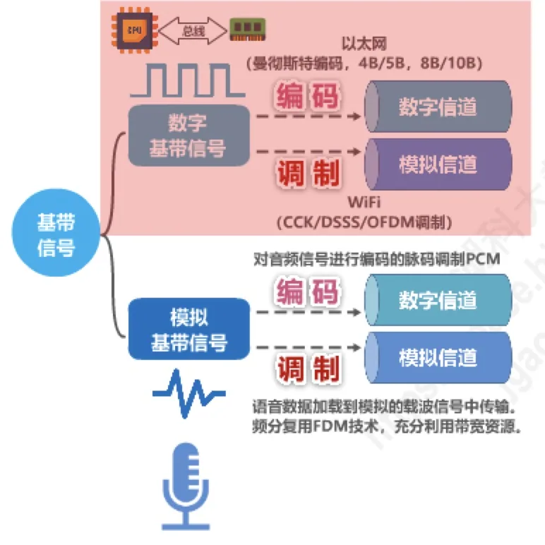
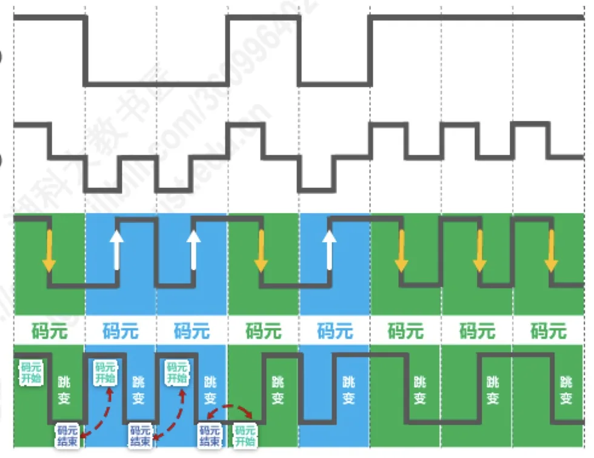
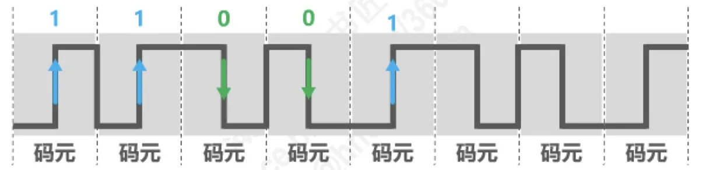
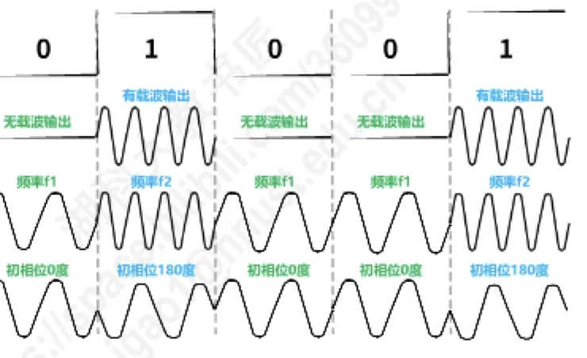
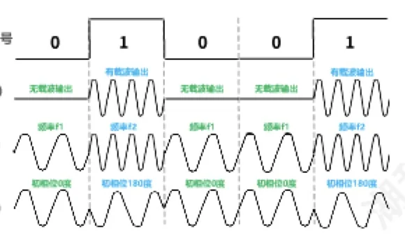
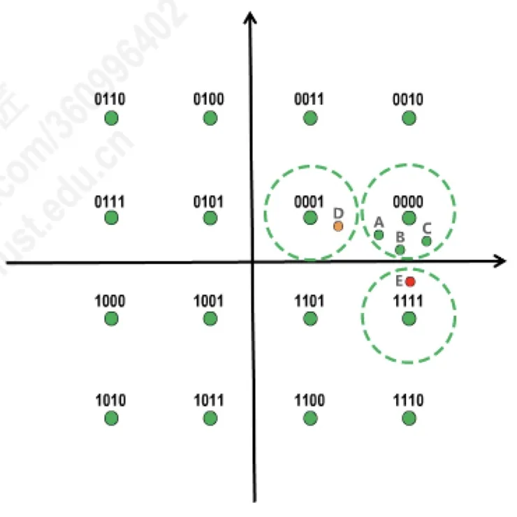

计算机通信与网络 · 第 2 章 物理层
2.4 编码与调制
信源产生的原始电信号叫基带信号，它往往不能直接在信道上传输：要么把它变换成适合在数字信道上传输的码形（编码），要么把它「装载」到模拟载波上（调制）。本节先把消息、数据、信号、码元这几个基本概念理清，再看四种常用编码和不归零编码的同步问题，最后讲调制方法，并引出能让一个码元携带多个比特的正交振幅调制 QAM。
1. 消息、数据、信号与码元
通信的目的是传送消息（message），例如语音、文字、图像。消息要靠数据（data）这种「运送消息的实体」来表示，而数据又必须变成信号（signal）——也就是数据的电磁表现——才能在信道上传输。信源发出的、没有经过调制的原始电信号称为基带信号，它可以是数字基带信号（如计算机输出的方波），也可以是模拟基带信号（如话筒输出的音频波形）。
在时间域的波形上表示数字信号时，代表不同离散数值的基本波形称为码元。例如用正电平表示比特 0、负电平表示比特 1，那么一段正电平就是一个码元。码元是数字信号的「度量单位」：一个码元可以只携带 1 个比特，也可以在更高阶的调制方式下携带多个比特。

2. 编码与调制
基带信号要送上信道，取决于信道是数字信道还是模拟信道，需要做两种不同的变换：
- 编码：把数字基带信号变换成适合在数字信道上传输的码形。例如传统以太网使用曼彻斯特编码，高速以太网使用 4B/5B、8B/10B 编码；话筒输出的音频信号用脉码调制 PCM 编码后，也可以送到数字信道上传输。
- 调制：把基带信号「装载」到模拟的载波信号上，使其适合在模拟信道上传输。例如 WiFi 使用 CCK、DSSS、OFDM 等调制方式；语音数据加载到模拟载波信号中传输时，还可以用频分复用 FDM 技术把一路带宽划分给多个用户，充分利用带宽资源。
3. 常用编码
把比特流变成波形有很多种做法，它们在「能否自同步」和「编码效率」上各有取舍。
（1）不归零编码 NRZ
不归零编码用两种电平直接表示比特，例如正电平表示比特 1、负电平表示比特 0，在一个码元内电平保持不变、不回到零。它实现简单、编码效率高，但存在同步问题：如果连续传送多个相同的比特，接收端看到的是长长的一段相同电平，无法判断这究竟是几个码元。要解决同步，就得额外用一根传输线传送时钟信号——而对计算机网络来说，宁愿用这根线传输数据信号，也不愿用它传时钟。
（2）归零编码 RZ
归零编码要求每个码元传输结束后信号都要归零，于是接收方只要在信号归零之后进行采样即可，不需要单独的时钟信号。这实际上相当于把时钟信号用「归零」的方式编码在了数据之内，称为自同步信号。代价是大部分数据带宽都被用来传输「归零」这种并不携带信息的跳变，编码效率低。
（3）曼彻斯特编码
曼彻斯特编码把每个码元分成前后两半，码元中间时刻的跳变既表示时钟，又表示数据：跳变既让接收端能够提取时钟，又用跳变的方向区分比特 0 和 1。它因此具有自同步能力，被传统以太网（10 Mbit/s）采用。代价是每个码元中间必有一次跳变，信号频率是数据率的两倍，占用的频带更宽。
（4）差分曼彻斯特编码
差分曼彻斯特编码的规则是：①码元中间时刻的跳变仅表示时钟；②码元开始处电平是否发生变化表示数据（变化表示一种比特，不变化表示另一种比特）。由于中间跳变只负责同步，它的波形变化比曼彻斯特编码更少，更适合较高的传输速率。

读曼彻斯特编码的波形有一个固定套路：先找准每个码元中间时刻的跳变，由此把波形一段段划分成码元；再约定正跳变表示 1、负跳变表示 0（或相反，只要收发双方约定一致即可）。原讲义用 10BaseT 网卡收到的一段信号波形演示过这个过程——10BaseT 以太网用的正是曼彻斯特编码，划分出码元后按跳变方向即可读出比特串。

4. 基本调制方法
如果信道是模拟信道，就要用数字基带信号去控制载波信号的某个参量，这叫作基本调制方法，共有三种：
- 调幅 AM：载波的振幅随数字基带信号变化，有载波输出表示一种比特，无载波输出表示另一种比特；
- 调频 FM：载波的频率随数字基带信号变化，例如用频率 f1 表示一种比特、频率 f2 表示另一种比特；
- 调相 PM：载波的初相位随数字基带信号变化，例如用初相位 0 度表示一种比特、180 度表示另一种比特。

使用这些基本调制方法时，一个码元只能包含一个比特的信息。要想让一个码元携带更多比特，就必须把码元的「状态数」做得更多，这就需要混合调制。
5. 混合调制与正交振幅调制 QAM
能不能同时调制振幅、频率和相位呢？答案是不能任意组合：频率和相位是相关的，频率本来就是相位随时间的变化率，所以一次只能调制频率和相位两者中的一个。剩下可以自由组合的，就是振幅与相位——把相位和振幅结合起来一起调制，就得到正交振幅调制 QAM（Quadrature Amplitude Modulation）。

以 QAM-16 为例：它采用 12 种相位，每种相位有 1 种或 2 种振幅可选，总共可以调制出 16 种码元（波形），因此每种码元可以对应表示 4 个比特（因为 2⁴ = 16）。
那么，16 种码元与 16 组 4 位比特的对应关系可以随便定义吗？不可以，工程上采用格雷码：让任意两个相邻码元只有 1 个比特不同。这样做的意义在于抗误码——接收端把某个码元判错时，往往只是判成了它在平面上相邻的那个码元，用格雷码映射，这种错误只会造成 1 位比特出错；如果对应关系随便定义，一次判错可能同时错 4 位。

本节小结
- 消息要靠数据来运送，数据必须以信号的形式在信道上传输；信源发出的原始电信号是基带信号；时间域波形中代表不同离散数值的基本波形叫码元，一个码元可以携带 1 个或多个比特；
- 基带信号送数字信道要编码（以太网的曼彻斯特编码、4B/5B、8B/10B，音频的 PCM），送模拟信道要调制（WiFi 的 CCK/DSSS/OFDM，语音载波传输与 FDM）；
- 四种常用编码各有取舍：不归零编码存在同步问题；归零编码靠「归零」自同步但编码效率低；曼彻斯特编码用码元中间的跳变同时表示时钟和数据，用于 10 Mbit/s 传统以太网；差分曼彻斯特编码的中间跳变仅表示时钟、用码元开始处是否跳变表示数据，变化更少、适合更高速率；
- 基本调制方法有调幅 AM、调频 FM、调相 PM 三种，一个码元只能携带 1 个比特；
- 频率与相位相关，一次只能调制其中之一，因此通常把相位与振幅结合成正交振幅调制 QAM；QAM-16 以 12 种相位、每种 1 或 2 种振幅构成 16 种码元，每码元携带 4 个比特，并用格雷码保证相邻码元只差 1 位，从而把码元判错的影响限制在 1 个比特上。